Falcon 9 早就回本了
SpaceX 为什么还要 IPO？
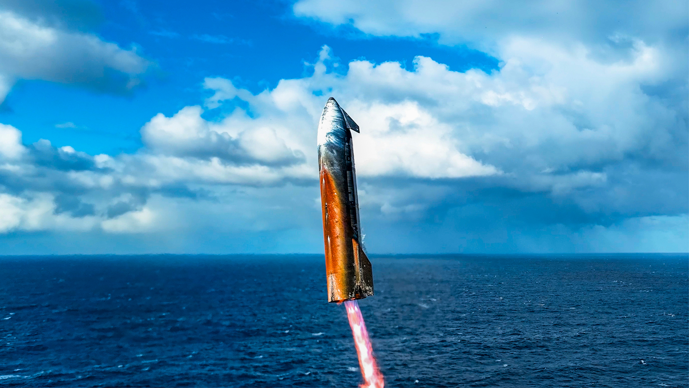
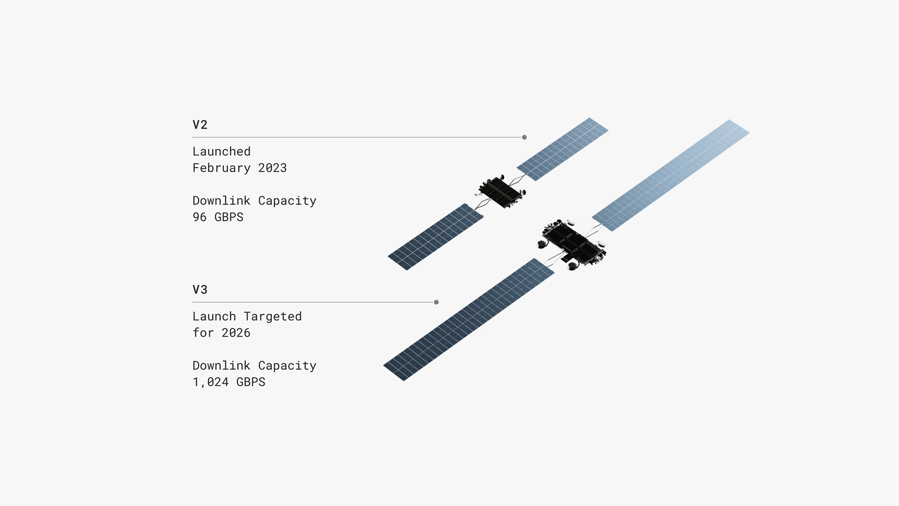
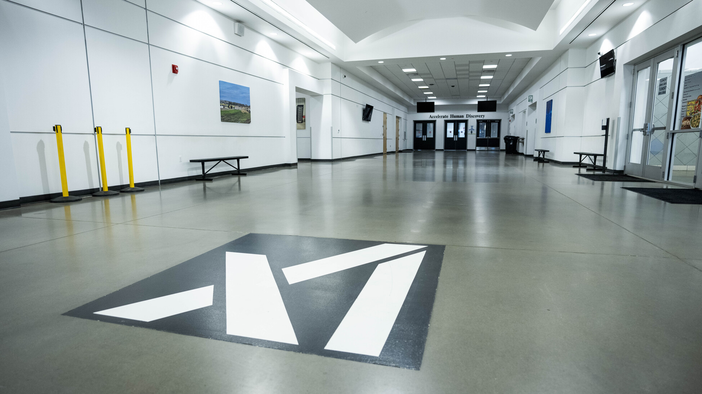
钩子
打开 600 多页的 SpaceX 招股书，三个数字会让你愣住。
第一个：SpaceX 这家公司（不含 xAI），过去 20 年累计股权融资清算优先权——只有 65 亿美元。OpenAI 一轮就超过这个数。
第二个：从 2002 年 Musk 个人出资 1 亿创立到 2026 年 IPO 前夜，他的持股从 100% 稀释到 12.3%，但投票权反而走出一条 U 型反弹，保住了 85.1%。
第三个：2026 年第一季度，SpaceX 把 76% 的资本开支砸在了 AI 数据中心上。火箭那一栏，只剩 10%。
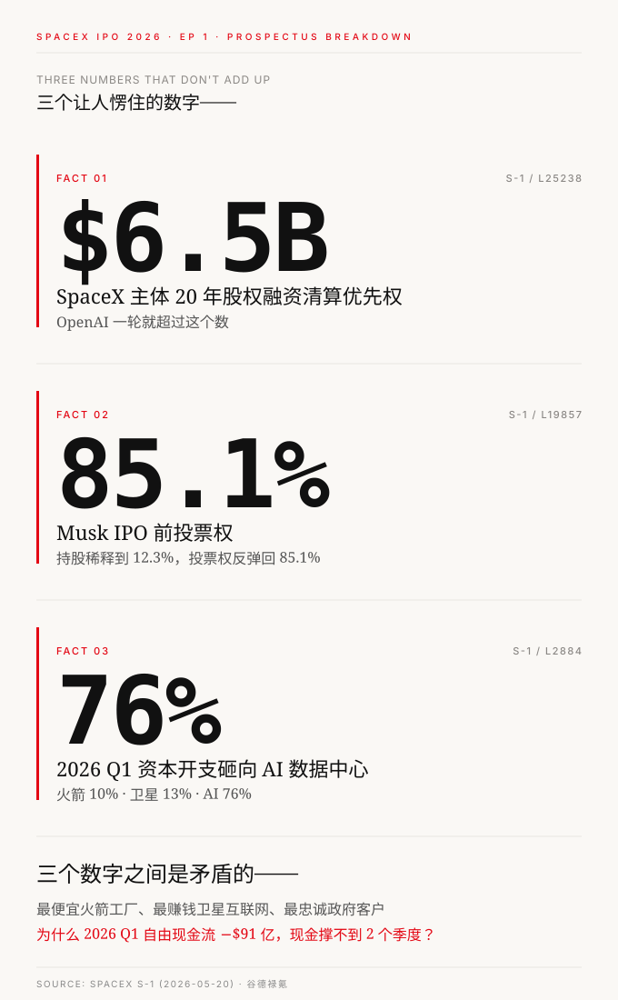
三个数字之间是矛盾的。
一家估值 1.75-2 万亿美元的公司，过去 20 年股权融资只够买半架商业航司的飞机；股权一路被稀释，投票权反而越投越多；火箭还在 Boca Chica 发射，钱却全去了 Memphis 的 GPU 机房。
更刺眼的是另一组数字——
2025 年，Falcon 9 平均每 2.2 天发射一次，全年 165 发。Starlink 在 2025 年一条业务线产生了 72 亿美元 EBITDA，比整个航天业务一年的资本开支还多。
这家公司有最便宜的火箭工厂，最赚钱的卫星互联网，最忠诚的政府客户。
那为什么 2026 年第一季度，自由现金流是 -90 亿美元？为什么账上 167 亿现金，按当前速度撑不到 2 个季度？为什么 2026 年 6 月必须 IPO？
答案不在 SpaceX 的航天故事里。
这一篇用三条时间线读这 24 年——融资线、烧钱线（R&D + 资本开支）、现金流线。三条线沿着同一段 24 年并行跑下来，会暴露主流叙事完全不讲的一件事：
三条线总览：24 年并行跑一遍
先建一个心智模型。把 SpaceX 24 年画成一张时间轴，三条线并排：
上轨——融资线：2002 Musk 自掏 1 亿创立 → 2008 Founders Fund 救命轮（估值 5 亿）→ 2015 Google + Fidelity 把估值推到 120 亿 → 2021 跨越千亿 → 2025 数千亿 → 2026 年 2 月，0 现金对价把 xAI 整个装了进来（带入 317 亿优先股清算优先权）。14 轮股权融资 + 1 次合并装入。
中轨——烧钱线（R&D + 资本开支）：主战场迁移过 4 次。
- 2002-2008：测试火箭——Falcon 1 连炸 3 次才有第 4 次成功
- 2009-2018：Falcon 9 量产 + 复用——Hawthorne 工厂从手工车间变成航天 Foxconn，2015 首次海上着陆，2017 例行复用
- 2019-2024：Starlink 编队卫星上天——Redmond 卫星厂一年造几千颗，2023 EBITDA 转正
- 2025-2026：建数据中心——Memphis 的 Colossus 集群、xAI 合并、22 万张 GPU
下轨——现金流线：长期负，2023 年因 Starlink EBITDA 转正集团 FCF 短暂拉正（+1 亿美元），然后 2024 急速恶化——2024 全年 FCF -54 亿，2025 -140 亿，2026 Q1 一个季度就烧掉 91 亿。
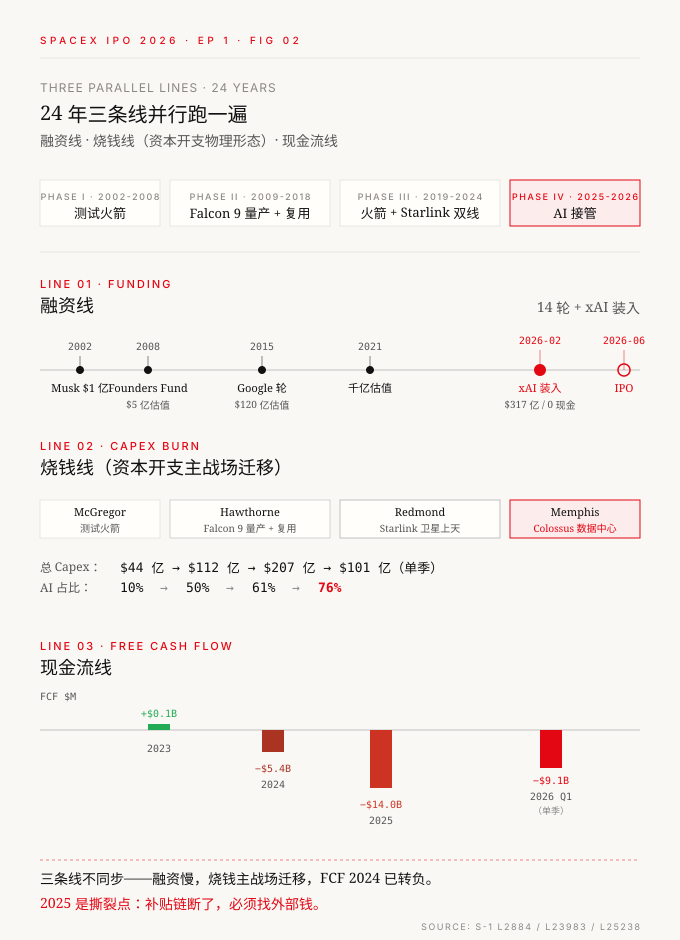
三条线最关键的一点，不是同步走的：
| 时间段 | 三条线状态 |
|---|---|
| 2002-2008 | 融资线刚启动，烧钱主战场是火箭研发，FCF 深度负——靠救命融资 |
| 2009-2018 | 融资节奏不快，烧钱进入量产期，FCF 仍负但 Falcon 9 项目 2017-2018 完成回本 |
| 2019-2024 | 融资估值跨千亿，烧钱开始烧 Starship + Starlink + 初代 AI，FCF 2023 拉正一年后又转负 |
| 2025-2026 | 融资靠 xAI 装入 + 借新还旧，烧钱主战场转 AI，FCF 单季 -91 亿——三条线开始撕裂 |
撕裂点就是 2025 年。这之前 SpaceX 是「火箭公司搞副业」，这之后是「AI 公司持有火箭业务」——会计层面已经悄悄改写。
接下来三节按这个时间顺序，把三条线分别拆开看。
- SpaceX 24 年只融了 $65 亿是真的——但还有 4 个隐形 VC 在补血，最大的 VC 是美国政府
- R&D 的"灵魂" 4 年完全换了赛道——2023 年 73% 给 Space，2026 Q1 已经 68% 给 AI
- Falcon 9 早回本，但 Space 段 2025 又亏 $6.6 亿——Falcon 9 的纯利全部喂给了 Starship
- 集团补贴链 2025 断了：Starlink → Space → AI，OCF 只能盖 8% 烧钱
- IPO 不是想不想——是不上市撑不到 2026 年底，账上现金按当前速度只够 1.8 个季度
融资线：14 轮 65 亿，但还有 4 个隐形 VC
- SpaceX 24 年只融了 $65 亿是真的——但还有 4 个隐形 VC 补血
- 美国政府是 SpaceX 最大的 VC（$121 亿 > $65 亿）
- Musk 在 24 年里把股权稀释到 12.3%，投票权反弹回 85.1%——靠的不是回购，是 dual-class
| 资金来源 | 24 年累计 | 是否稀释 |
|---|---|---|
| 14 轮股权融资清算优先权 | $65 亿 | 是 |
| 隐形 VC ① 政府预收款 | $121 亿 | 否 |
| 隐形 VC ② 反向回购员工股 | −$66 亿 | 净融资减半 |
| 隐形 VC ③ 债务 + GPU 租赁 | +$136 亿 | 否 |
| 隐形 VC ④ xAI 0 现金装入 | $317 亿 | 老股东摊薄 |
股权融资只是最小的一路。
2.1 14 轮股权融资，清算优先权只有 65 亿
S-1 Note 13 把 SpaceX 主体（不含 xAI）历轮优先股一字排开——从 Series A 到 Series N，14 轮。每一轮的发行价、流通股数、清算优先权都在表里。把这 14 行加起来：
| 项 | 数字 | 出处 |
|---|---|---|
| SpaceX 主体流通优先股（14 轮） | 134.8M 股 | S-1 L25238 |
| 累计清算优先权 | $6,527M | L25238 |
| 估值 2026 IPO 前 | $1.75-2 万亿 | preliminary |
$65 亿换 $1.75 万亿估值——268 倍。这不是稀有，是反认知到不可思议。
把每一轮的估值跃迁画出来：
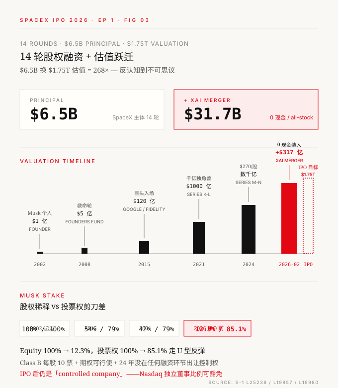
最后一行是反认知的——Musk 持股从 100% 跌到 12.3%，投票权却从 100% 走了一个 U 型反弹回 85.1%。这个剪刀差怎么造出来的？
答案在 S-1 L162-164 + L19980 三行字里：Class A 每股 1 票；Class B 每股 10 票；Class B 持有人单独投票就能选出 51% 的董事。
Musk 持有 5.57B 股 Class B + 0.85B 股 Class A，加上 60 天内可行使的 350M 期权——折成投票权口径就是 85.1%。IPO 后 SpaceX 仍是「controlled company」，能豁免 Nasdaq 部分独立董事比例要求。
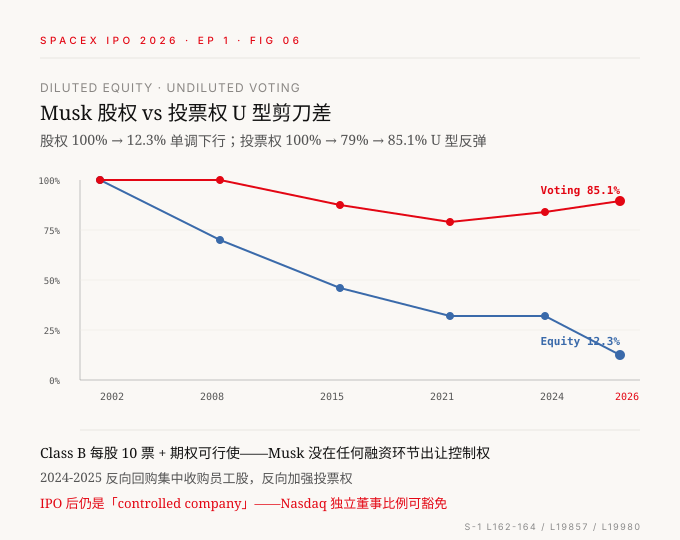
这是 § 0 第二个反认知数字「85% 投票权」的答案——Musk 24 年没在任何融资环节出让控制权。后面写到 IPO 部分会发现这个事实跟另一件事撞在了一起。
2.2 100 亿股权融资只是表面——4 个隐形 VC
SpaceX 24 年「少融钱」是表面。S-1 拆开看，真正的资金来源是 5 路并发，股权融资是其中最小的一路。四个隐形 VC，逐一拆开来看——
隐形 VC ① 政府预收款 $121 亿
"All of our launch contracts with U.S. government agencies are firm fixed-price contracts with milestone-based payments." — S-1 L17988
翻译——所有政府发射合同都是「固定价 + 里程碑预付」。意思是 NASA、DoW 不是「先发射后付款的客户」，而是「按里程碑预付的资助方」。SpaceX 在合同签下来那一刻就开始收钱，研发和资本开支的现金压力，被会计准则搬到了客户的应付款表上。
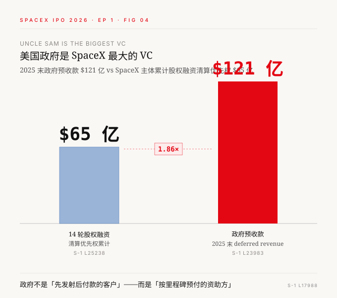
美国政府是 SpaceX 最大的 VC。一句话写得直白——比所有 VC 和主权基金加起来的清算优先权还要多 86%。
隐形 VC ② 反向回购 −$66.6 亿
2024-2026 Q1 这 27 个月里，SpaceX 一边融钱、一边用现金从员工和老股东手里回购股票：
| 期间 | 回购金额 | 出处 |
|---|---|---|
| 2024 | $1,021M | L22828 |
| 2025 | $1,125M | L22828 |
| 2026 Q1 | $4,346M（峰值） | L27255 |
| 累计 | $6,492M | — |
其中 2026 Q1 单季 43 亿——和 xAI 合并直接相关（一次性给被并入的 xAI 员工现金兑付）。这意味着 SpaceX 表面上 27 个月融了 $100 亿，净融资其实只有 $35 亿。剩下 $65 亿全部当成了"私募版 IPO"——用公司现金给员工和老股东兑现流动性。
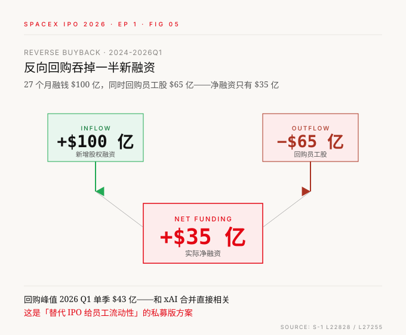
隐形 VC ③ 债务 $92 亿 + GPU 融资租赁
2025 一年，SpaceX 借了 161 亿、还了 69 亿、净增 92 亿；2026 Q1 一个季度借了 227 亿、还了 183 亿、净增 44 亿：
| 期间 | Proceeds from debt | Repayments | Net |
|---|---|---|---|
| 2025 | $16,055M | $(6,858)M | +$9,197M |
| 2026 Q1 | $22,694M | $(18,295)M | +$4,399M |
2026 Q1 单季新借 227 亿——"借新还旧"的滚动规模惊人。利息支出 2026 Q1 单季 $990M ≈ 2025 全年的 67%，债务负担在急剧放大。GPU 融资租赁是大头——AI 行业惯例。这条线 Musk 选择上杠杆而不是稀释，理由很清楚：不想让出投票权。
隐形 VC ④ xAI 0 现金装入 $317 亿
2026 年 2 月，IPO 路演前 4 个月，SpaceX 干了一笔账面魔术：
| 项 | 内容 |
|---|---|
| 交易日期 | 2026-02 |
| 现金对价 | $0 |
| 对价方式 | All-stock（SpaceX 增发） |
| 会计处理 | Common control 追溯重述 |
| 装入资产 | xAI 全部（Colossus / Grok / GPU） |
| 装入清算优先权 | $317 亿 |
| 估值故事变化 | 航天 + 通信 → AI compute |
按 common control 会计原则，xAI 的所有 GPU 投资、所有 Colossus 集群的折旧、所有训练 Grok 烧掉的电费——追溯重述进 SpaceX 报表，从 2023 年开始。一笔操作之后，xAI $317 亿优先股清算优先权直接进了 SpaceX 报表，估值故事从「航天 + 通信」升级成「AI compute」。
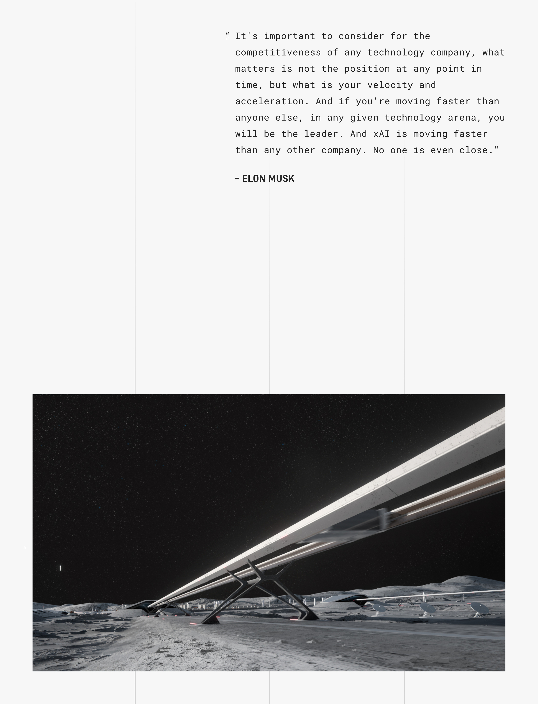
合并完成的那一刻，「SpaceX 是火箭公司」这个心智在会计层面被悄悄改写。
2.3 融资线一句话
"100 亿够用"不是因为 SpaceX 节俭，是因为有 4 个看不见的口袋在补。这些钱花到哪去了？
烧钱线：4 代火箭 + 3 业务的物理形态迁移
- R&D 4 年完全颠倒：2023 年 73% 在 Space（造火箭公司），2026 Q1 已经 68% 在 AI（AI 公司）
- Capex 76% 砸 AI 不是「转型」——是 AI 增长太快稀释老业务占比，火箭还在烧（绝对值仍在涨）
- Falcon 9 单架 booster 飞 3 次就回本，后 27 次纯利——但 Space 段 2025 又亏 $6.6 亿，因为 Falcon 9 在补贴 Starship
| 年份 | R&D 大头 | Capex 大头 |
|---|---|---|
| 2023 | Space 73% | Connectivity 56% |
| 2024 | Space 53% | AI 51% |
| 2025 | AI 59% | AI 61% |
| 2026 Q1 | AI 68% | AI 76% |
SpaceX 的"灵魂" 4 年完全换了一个赛道——从造火箭公司变成 AI 公司，这是会计层面已经完成的事。
3.1 资本开支占比 4 年颠倒——但这是表面
把 SpaceX 2023-2026 Q1 的资本开支按业务线拆开，会看到一张让人愣住的表：
| 年份 | Space（火箭） | Connectivity（Starlink） | AI | 总 Capex |
|---|---|---|---|---|
| 2023 | $1,497M（33.9%） | $2,455M（55.6%） | $463M（10.5%） | $4,415M |
| 2024 | $2,032M（18.2%） | $3,498M（31.3%） | $5,633M（50.5%） | $11,163M |
| 2025 | $3,832M（18.5%） | $4,178M（20.1%） | $12,727M（61.4%） | $20,737M |
| 2026 Q1 | $1,052M（10.4%） | $1,332M（13.2%） | $7,723M（76.4%） | $10,107M |
火箭占比从 34% 跌到 10%，AI 从 10% 涨到 76%。这就是 § 0 第三个反认知数字「76% GPU」的答案——不是 SpaceX 转型不做火箭了，是 AI 这条线的烧钱速度太快，把其他两条占比稀释了。
火箭 capex 的绝对值还在涨（2023 的 $15 亿 → 2025 的 $38 亿，翻了 2.5 倍），只是被 AI 这条新业务的爆炸式增长盖住了。但 capex 只是一半。真正告诉你 SpaceX 在烧什么的是 R&D。
3.2 R&D 占比 4 年完全颠倒——这是 SpaceX 灵魂换赛道
S-1 Note 19 分部表把 R&D 按业务线一字摆开：
| 期间 | Space R&D | Connectivity R&D | AI R&D | 集团合计 |
|---|---|---|---|---|
| 2023 | $1,538 | $381 | $186 | $2,105 |
| 2024 | $1,835 | $453 | $1,176 | $3,464 |
| 2025 | $3,004 | $575 | $5,064 | $8,643 |
| 2026 Q1 | $930 | $205 | $2,379 | $3,514 |

4 年时间，R&D 的"灵魂"完全换了一个赛道——2023 年 73% 的 R&D 砸在 Space（这是「造火箭公司」的财务证据），2025 年 59% 的 R&D 砸在 AI（这是「AI 公司」的财务证据）。
要理解这个 73% Space R&D，需要看 S-1 一条会计政策（L9143）：
"Space segment's research and development ("R&D") expenses mainly relate to the development, build, and testing of Starship."
→ Space R&D ≈ Starship R&D——招股书自己背书的。
意思是 2025 年 Starship 一个产品烧了 $30 亿研发，并且按会计准则是全部费用化（不进资产负债表）。这条规则有个隐含含义——Starship 一旦在 2026 H2 商业化，Space R&D 会断崖式下降（按 S-1 L9165-9167 规则，商业化后转为资本化，按交付载荷分摊）。
3.3 4 代火箭的生命周期：研发变短，现金流尾巴变长
SpaceX 这 24 年火箭一共做了 4 代产品：Falcon 1、Falcon 9、Falcon Heavy、Starship。每一代都有一条研发起点 → 首飞 → 首次商业 → 复用突破 → 退役的轨迹。把 4 条轨迹画到同一张时间轴上，能看到一条规律：

挑两个反认知点出来：
研发周期不一定变短——Falcon 1 用 4 年，Falcon 9 用 5 年，Falcon Heavy 用 7 年，Starship 首飞 4 年（首飞最快但商业化最慢）。
但现金流周期在大幅变长——Falcon 1 < 1 年（失败退役），Falcon 9 运营 16 年仍在赚，Falcon Heavy 8 年仍在飞。Starship 还有 0 美元收入。
2025 年 Falcon 9 + Heavy 全年发射 165 次——平均 2.2 天一发。43 次商业客户 + 122 次自用（给 Starlink 部署）。
3.4 复用三口径打架——Falcon 9 经济模型的真正秘密
S-1 披露的一个细节，要花点篇幅讲清楚——Falcon 9 一根 booster 到底能飞几次？
三个权威方给出三个完全不同的答案：
| 口径 | 数字 | 谁定的 |
|---|---|---|
| 工程上限 | 34 次 | SpaceX 工程团队（已实证） |
| 财务折旧上限 | 25 次 | SpaceX 会计（保守政策） |
| 政府合同上限 | ≤ 5 次 | NASA / DoW（招标规则） |
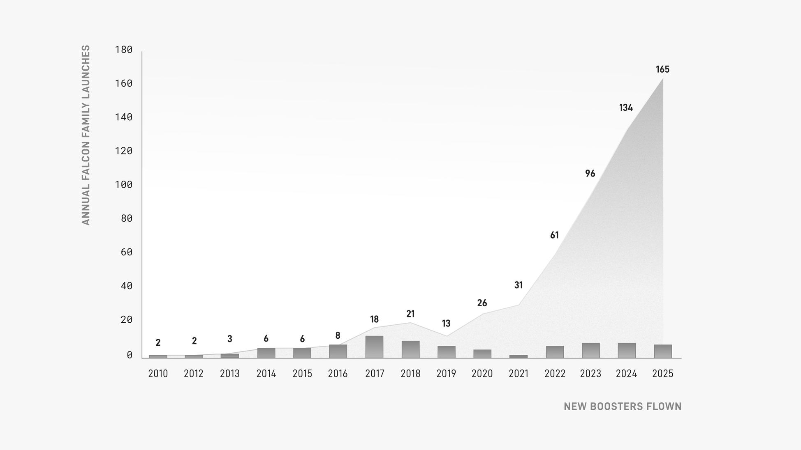
对投资人来说，这三个数字本质是一回事——单根 booster 全生命周期大约能飞 30 次。但这三个数字撞一起，造出了 SpaceX 的客户分层经济：
| Booster 已飞次数 | 折旧状态 | 唯一适配客户 | 单次收入（行业估） |
|---|---|---|---|
| 1-5 次 | 折 4-20% | 政府高价合同（NASA / DoW） | $1-2 亿 |
| 6-25 次 | 折 24-100% | 商业卫星客户（SES / 铱星） | $6-7 千万 |
| 26-34 次 | 账面已归零 | Starlink 自用 | 接近零成本 |
SpaceX 这家公司，把一根 booster 的一生拆成了 3 段——头 5 次给政府赚高价钱，中间 20 次给商业卫星赚正常钱，最后 9 次给 Starlink 自用基本免费。
这解释了 2024/2025 Launch Services 收入持平在 $25.8 亿一件诡异的事——不是 SpaceX 火箭飞少了，是更多 booster 进入了"折旧已归零"阶段，单价跟着降。但同一根火箭多飞一次的边际成本接近零，等于把这部分价值偷偷转给了 Starlink 部署成本下降。
3.5 单架 booster 回本（粗框架，细节留 Ep3）
这一段只给框架性结论，所有具体参数留给下一篇 Ep3 火箭经济计算器：
| 项 | 估值 | 数据性质 |
|---|---|---|
| Booster 单架造价 | $35M | 行业共识，S-1 未披露 |
| 项目早期分摊（R&D + 工厂 + 发射台） | ≈ $8.5B / 40-50 架 = 每架 $200M | 推算 |
| 单架真实成本（含分摊） | ≈ $225M | 估算 |
| 全生命周期飞行次数 | 约 30 次 | S-1 工程口径 |
| 回本所需飞行次数 | 约 3 次政府发射 | 简化模型 |
| 后续纯利次数 | 27 次 | — |
→ Falcon 9 单架 booster 飞 3 次回本，后 27 次基本是纯利。项目层面，Falcon 9 在 2017-2018 完成回本（复用例行化时点）。
3.6 但 Space 段 2025 又转回亏损——Falcon 9 在补贴 Starship
讲到这里有一个看起来矛盾的事实需要回应——Falcon 9 既然这么赚钱，为什么 Space 段 2025 年又亏了 $6.6 亿？
| 年份 | Space OI |
|---|---|
| 2023 | $(1)M |
| 2024 | +$21M（刚转正） |
| 2025 | −$657M（被 Starship 拖回亏损） |
答案在 § 3.2——Space R&D ≈ Starship R&D。Falcon 9 早就回本了，但 Space 段把 Falcon 9 的纯利全部喂给了 Starship 的烧钱黑洞：2025 Space R&D $30 亿（基本上全部是 Starship 烧的），Space Capex $38 亿（一部分给 Starship 基建），合计烧钱 $68 亿。而 Falcon 9 + Heavy 那条赚钱的腿——Launch Services 收入只有 $25.8 亿。
3.7 接下篇 Ep3 火箭经济计算器
- Falcon 9 单 booster 飞过 34 次，财务上只按 25 次折旧——多飞的 9 次是「纯利润」
- Falcon Heavy 平均每个 booster 飞了 6 次，单次 $/kg 跌到 $1,400
- Starship 还没飞起来，但目标是把 $/kg 再砍 90%——这个数字一旦实现，整个 SpaceX 的资本开支模型会被改写
下一篇 Ep3：火箭经济计算器——输入复用次数、Starship 量产年产量、单次燃料成本，输出单 kg 入轨成本、单次毛利、Starlink 部署速度、轨道数据中心可行性。
现金流线：补贴链全景，2025 撕裂
- 2024 集团 FCF 已经转负（−$54 亿）——比 xAI 合并早 2 年
- 只有 Starlink 是健康赛道（烧/收比 42%），Space 是 167%，AI 是 556%
- 集团补贴链 2025 断了——OCF 只能盖 8% 烧钱，剩下 92% 靠融资 + 债务补
- 账上 $167 亿，按 2026 Q1 速度撑不到 2 个季度——IPO 是物理必然
4.1 集团 FCF 4 年画像
把 SpaceX 的经营现金流（OCF）− 资本开支（Capex）= 自由现金流（FCF）逐年算出来：
| 年份 | OCF | Capex | FCF | 状态 |
|---|---|---|---|---|
| 2023 | $4,520M | $4,415M | +$105M | 几近持平 |
| 2024 | $5,776M | $11,163M | −$5,387M | 已转负 |
| 2025 | $6,785M | $20,737M | −$13,952M | 急剧扩大 |
| 2026 Q1 | $1,047M | $10,107M | −$9,060M（单季） | 年化 −$36B |
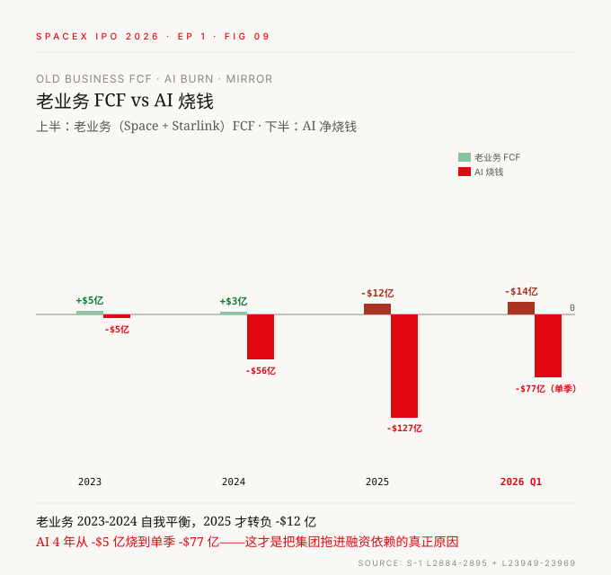
2024 已经是拐点——一切发生在合并 xAI 之前。2024 集团 FCF -$54 亿，2025 -$140 亿，2026 Q1 一个季度就 -$91 亿。
4.2 烧钱效率矩阵——SpaceX 在被自己甩开
把 R&D 和 Capex 加起来作为「真实总烧钱」，对照收入和 OCF：
| 期间 | R&D + Capex | Revenue | 烧/收比 | OCF/烧 |
|---|---|---|---|---|
| 2023 | $6,520M | $10,387M | 63% | 69% |
| 2024 | $14,627M | $14,015M | 104% | 39% |
| 2025 | $29,380M | $18,674M | 157% | 23% |
| 2026 Q1 | $13,621M | $4,694M | 290% | 8% |

三个反认知数字：
- 2024 年开始，SpaceX 烧的钱已经超过收入（104%）
- 2025 年烧钱是收入的 1.57 倍
- 2026 Q1 烧钱是收入的 2.9 倍——经营现金流只能盖 8% 烧钱，92% 靠融资和债务补
这就是「不上市撑不下去」的真实尺度。
4.3 分部口径——只有 Starlink 健康
把 R&D + Capex / Revenue 这个比率按分部拆开（2025 年）：
| 维度 | Space | Connectivity（Starlink） | AI |
|---|---|---|---|
| Revenue | $4,086M | $11,387M | $3,201M |
| R&D + Capex | $6,836M | $4,753M | $17,791M |
| 烧/收比 | 167% | 42% | 556% |
| Adj. EBITDA | $653M | $7,168M | $(1,237)M |
- Connectivity（Starlink）是唯一健康的赛道——烧钱只占收入 42%，一年产 EBITDA 72 亿
- Space（火箭）烧钱是收入 1.67 倍——Starship 在吃钱
- AI 烧钱是收入 5.56 倍——典型早期烧钱赛道
- AI 一个分部吃了集团 60% 的 R&D + 61% 的 Capex
4.4 集团补贴链：Starlink → Space → AI
把 2025 年 Adj. EBITDA 按分部排开，看每一条业务是给钱的还是吃钱的：
| 分部 | 2023 | 2024 | 2025 | 角色 |
|---|---|---|---|---|
| Space（火箭+Starship） | $997M | $1,154M | $653M | 小额贡献，被 Starship 拖累 |
| Connectivity（Starlink） | $1,602M | $3,849M | $7,168M | 造血主力 |
| AI（xAI + X） | $1,222M | $347M | $(1,237)M | 吞噬黑洞 |
剔除 AI 看老业务：Space + Connectivity 2025 年合计经营利润 $3.77B（4,423 − 657）。老业务实际在补贴 AI 的烧钱。

4.5 现金倒计时：不到 2 个季度
最后看现金画像——这是 IPO 的物理理由：
| 时点 | 现金（含受限） | 备注 |
|---|---|---|
| 2025-12-31 | $25,124M | 募资 + xAI 装入推高 |
| 2026-03-31 | $16,608M | 一个季度净流失 $8.5B |
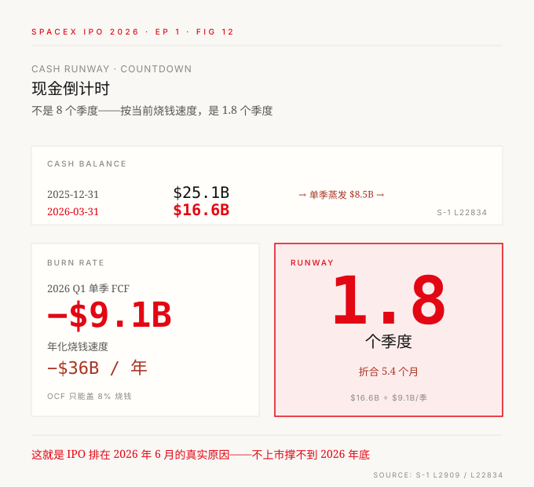
收口：三个数字的真正答案 + IPO 的真名
5.1 三个数字的答案（呼应 § 0）
回到第一段那三个让人愣住的数字：
| 反认知数字 | 答案 | 在哪一节 |
|---|---|---|
| 20 年只融了 $65 亿 | 因为有 4 个隐形 VC——政府预付 $121 亿 + 反向回购吞掉 $66 亿 + 债务 $136 亿 + xAI 装入 $317 亿 | § 2 |
| Musk 投票权 85.1% | dual-class Class B 10:1 + Musk 24 年没在任何融资环节出让控制权 | § 2.1 |
| 2026 Q1 capex 76% 砸 AI | AI 这条线增长太快淹没了老业务占比，不是转型，是 AI 业务接管了 SpaceX | § 3 |
但 § 0 真正问的不是这三个数字，是后面那三个矛盾：
| 矛盾 | 答案 |
|---|---|
| 最便宜火箭工厂、最赚钱卫星互联网、最忠诚政府客户——为什么 2026 Q1 FCF -$90 亿？ | 集团补贴链：Starlink → Space（养 Starship）→ AI（烧 $179 亿） |
| 账上 $167 亿，为什么撑不到 2 个季度？ | 单季 FCF -$91 亿，年化 -$364 亿 |
| 为什么 2026 年 6 月必须 IPO？ | 内部补贴链 2025 年断了——OCF 只能盖 8% 烧钱 |

5.2 IPO 的真名 = 给 AI 数据中心找钱
把 § 0 那句话兑现：
AI 在 2025 年烧了 R&D $50.6 亿 + Capex $127.3 亿 = 合计 $177.9 亿。年化 2026 Q1 速度跑到 $300 亿+——已经超过 Musk 24 年所有股权融资 + 4 个隐形 VC 的总和。
私募市场撑不住这个量级。所以 2026 年 6 月这场 IPO——本质上是给 AI 数据中心找钱。
S-1 第 6942 行原文给出了官方排序：
"We intend to use the net proceeds from this offering to fund our growth strategy, including:
(1) the expansion of our AI compute infrastructure,
(2) enhancements to our launch infrastructure and launch vehicles,
(3) increases in the scale and capacity of our satellite constellations,
and (4) any remaining amounts for general corporate purposes."
AI 排第 1。火箭排第 2。Starlink 排第 3。
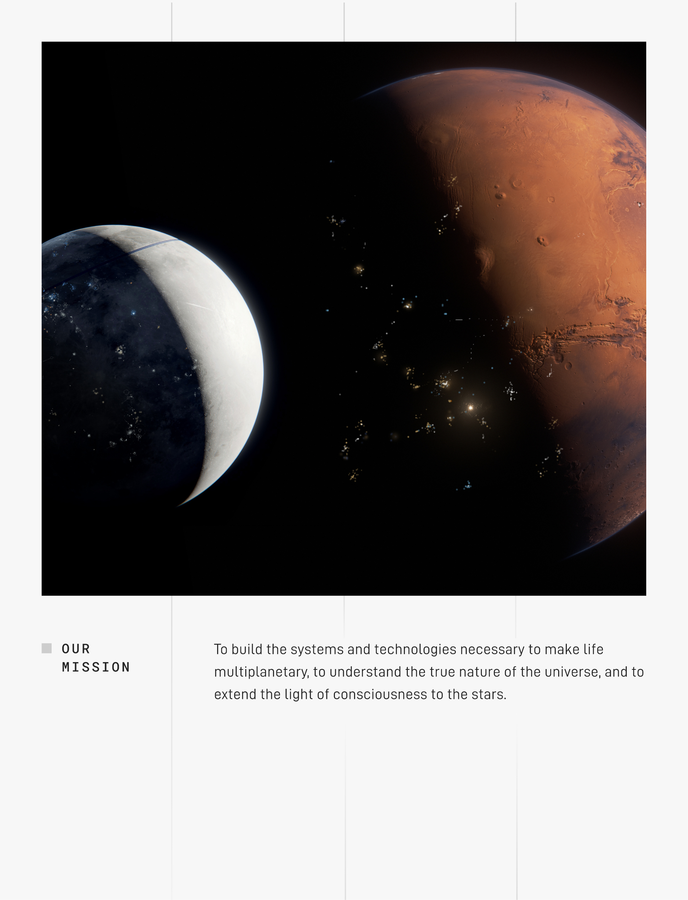
5.3 跟踪信号
| # | 信号 | 含义 |
|---|---|---|
| 1 | IPO 后第 1 年 SpaceX 再融资节奏 | 看 AI 烧钱是否超出 IPO 募资覆盖 |
| 2 | Term Loan 偿还进度（S-1 L10998 强制条款） | 强制还债占募资的比例 |
| 3 | xAI / Anthropic 续约信号 | AI 收入线能否撑住估值 |
| 4 | Starship 商业化时点（预计 2026 H2） | 一旦商业化，Space R&D 会断崖式下降，集团 FCF 会有显著改善 |
5.4 留给读者的悬念 → 下篇预告
这一篇拆「钱怎么撑下来的」——融资线、烧钱线、现金流线三条平行轨道。
但读到这里你可能有个直觉的疑问：
Falcon 9 单架 booster 飞 3 次就回本，后 27 次纯利。2025 年发射 165 次，平均 2.2 天 1 发。这台赚钱机器只会越转越快——那为什么 Space 段反而 2025 又亏了 $6.6 亿？SpaceX 未来的利润，到底会变好还是变坏？
答案不在「火箭多便宜」，在「Musk 把火箭赚的钱拿去做什么了」。
下一篇 Ep2：拆完 SpaceX 收入——Musk 在卖三样东西，下一个赌的是 AI 算力。5 条收入线分部模型（发射服务 / Starlink C 端 / Starlink 企业级 / X 广告 / xAI 算力租赁）+ AI 算力卖铲人推演——同时回答「钱怎么挣回来」+「未来利润趋势」两个问题。
- 20 年只融 $65 亿不是「省钱」——是有 4 个隐形 VC 在补血，最大的 VC 是美国政府。
- 76% capex 砸 AI 不是「转型」——是 AI 一条线的爆炸式增长稀释了老业务占比，火箭还在烧（只是被盖住了）。
- IPO 不是「想不想」——是内部补贴链 2025 年断了。Falcon 9 补 Starship、Starlink 补 AI，但 AI 这条线一年烧 $300 亿，超过 24 年所有融资+隐形 VC 的总和。
系列下一篇（Ep2）：拆完 SpaceX 收入——Musk 在卖三样东西，下一个赌的是 AI 算力
5/29 见